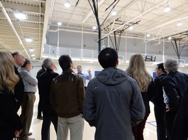

Meeting Presentations and Materials
More than 250 researchers, manufacturers, industry insiders, and observers gathered in Raleigh, North Carolina, February 2–4, 2016, to participate in DOE's 13th annual Solid-State Lighting R&D Workshop.
DOE SSL Program Manager James Brodrick reminded the audience that these are still relatively early days for SSL, and that despite all the impressive gains that have been made to date, enormous potential still remains. To consider the technology to be “good enough” at this point in time, he said, would be comparable to the cell-phone industry having been content to stop innovating once the early, cumbersome mobile phones had been developed. Brodrick observed that to keep pace with the changes that are taking place in the lighting world, new lighting companies are emerging while existing ones are reinventing themselves, and that manufacturers are thinking beyond familiar form factors and uses and are developing products with enhanced value in terms of lighting performance.
A NEW LIGHTING PARADIGM
Jeff Quinlan of Acuity Brands spoke about the new lighting paradigm that’s being enabled by SSL. Citing efficacy as a key consideration because of its close tie to cost, he observed that SSL is approaching cost parity with conventional lighting but needs to break free of the shackles of existing infrastructure. Quinlan described a number of emerging and potential non-illumination uses for SSL, such as guiding visitors to the right office in a building, identifying which conference rooms are unoccupied, adjusting CCT over the course of the day to suit circadian rhythms, summoning a garage elevator to the floor where someone has just parked, using CO2 levels to adjust heating and air conditioning based on the number of occupants, and anticipating users’ lighting preferences based on past usage. “This is a great opportunity,” he said. “The question is how to leverage it.”
BRINGING OLEDS TO MARKET
David DeJoy of OLEDWorks talked about bringing OLED lighting to market. He noted that OLED panels already surpass performance thresholds for many applications, with efficacies of 50 lm/W and CRIs of 80 for some products. DeJoy reviewed the advantages of OLED technology (thin planar source, naturally diffuse, excellent color rendering, low glare, cool to the touch, solid-state, efficient, controllable), adding that OLEDs are easy to integrate into fixtures and can be used as building material. He said OLED lighting technology is about seven or eight years behind LEDs, and cited DOE’s OLED testing opportunity as helping to move the technology forward. Emphasizing the importance of experiencing OLED lighting in person, DeJoy called for OLED GATEWAY demonstrations and said “The key to success is collaboration.”
THE INFLUENCE OF SSL ON RESTAURANT LIGHTING DESIGN CONCEPTS
Brock Boyett of Jack in the Box and Kevin Reilly of Peak Lighting & Energy recounted Jack in the Box’s extensive and persistent history with SSL, which began in the 1990s. At that time, Reilly noted, the results with SSL were found to be disappointing from both a cost and a performance standpoint. The company next considered LED lighting in 2006 but again discovered performance problems. However, subsequent experiments with SSL in succeeding years yielded some partial successes and led to a “stunningly” successful retrofit project that began in 2014 and was rolled out to 360 locations over a 15-month period. Reilly explained that in this project, each successive refinement to the scope helped familiarize leadership with the nuanced differences between SSL and conventional lighting, and that the integration of energy savings, maintenance savings, and rebates into the analysis shortened the payback period.
GLOBAL Production
Decai Sun of Luminus Devices explored the impact of China’s rising LED industry on global LED manufacturing and SSL adoption. He said that China’s LED industry is going through a technology upgrade similar to that of other high-tech industries, and that the technology gap between Chinese LED companies and those located elsewhere has shrunk dramatically. Sun observed that strong companies in the SSL supply chain have emerged, and that adoption of SSL has been taking place faster in China than in the rest of the world. He noted that the rise of the Chinese LED industry has impacted the global SSL industry in a profound way, supplying LEDs and driving volume growth for general lighting, driving cost down faster than predicted, causing profit-margin erosion, and forcing some players to change business models or exit—while benefiting end users and accelerating SSL adoption.
DIRECTIONS IN CONNECTED LIGHTING
A panel moderated by Monica Hansen of LED Lighting Advisors explored directions in connected lighting. Sandhi Bhide of Intel discussed a new ambient-computing platform for the Internet of Things (IoT) that’s based on Intel architecture. He noted that lights are potential IoT nodes and in addition to delivering lumens can deliver many other kinds of services that could offset dwindling profit margins. Bhide said every LED could become a sensor, creating a planet-wide sensory network that would benefit homes, businesses, and cities by, for example, providing advanced warning of tornados by detecting ion concentrations in the air. He explained that the ambient platform Intel is creating would fit into the light fixture and could be a common base on which lighting companies could innovate.
Peter Duine of Philips Lighting talked about the new world of connected light. He observed that legislation such as California’s Title 24 and ASHRAE 90.1 is driving a move to field-task tuning, occupancy sensing, and daylight harvesting. Duine noted that lighting provides an opportunity for data collection, and predicted that lighting’s focus will gradually shift from energy savings to the collection of data for new uses, such as building automation, space management, and retail engagement. He said smart lighting is taking off because of the availability and adoption of low-power wireless standards, and warned that the lighting industry will lose its relevance if it doesn’t play a leading role in the coming of “big data.” “If the lighting industry doesn’t get its act together quickly, others will come in and fill that gap,” Duine said.
Evan Petridis of Enlighted focused on lighting and the IoT. He noted that system architecture in the lighting world has been around for a long time, that there’s a lot of interchangeability between components, and that many of these interfaces have long since been standardized and are very well understood by everyone who’s using them, including manufacturers and contractors, resulting in an overall system that runs smoothly. One challenge for lighting, Petridis said, is to design an IoT system that can sense and report meaningful information about the space, at a cost that can compete with a 1-bit/hour light switch. He stated that every time a luminaire is replaced or retrofitted without putting in a future-proof networked sensor, a huge opportunity is lost.
Himamshu Prasad of GE Lighting talked about lighting in relation to intelligent cities. He noted that the latest transformation in the lighting industry has just begun and is focused on the development of intelligent applications, which could help cities in such areas as lighting control, parking, surveillance, traffic, and the environment. But Prasad emphasized that the choice of a platform is very important, because there are more than 50 million outdoor light fixtures in the U.S., so a way is needed to effectively process the data they generate. Such a platform, he said, must be cloud-based for efficiency and agility, be readily accessible, have end-to-end security, offer good asset-data management, provide predictive insights from big data, and offer a consistent and meaningful user experience.
THE RIGHT LIGHT FOR THE APPLICATION
Morgan Pattison of SSLS, Inc. moderated a panel on the right light for the application. Joe Casper of Ephesus Lighting discussed the use of SSL in sports stadiums. He said that in such settings, configurable LED lighting systems that have full control capability, with glare control and color tuning, can not only reduce operating cost but also enhance player performance and fan experience. Casper emphasized SSL’s unique compatibility with high-definition TV broadcasting, which is a big advantage over the incumbent metal halide technology. He cited several case studies, including one at the University of Phoenix Stadium in Glendale, AZ, where the National Football League’s Arizona Cardinals play and where installing LED lighting resulted in 75% energy savings; and the Canadian Tire Center in Ottawa, Canada, where the National Hockey League’s Ottawa Senators play, and where energy savings from SSL were 71%.
Matthew Legler of the U.S. Navy discussed the Naval Sea System Command’s ongoing shipboard transition to LED lighting. He said the spectrum of LED lighting can more closely approximate that of sunlight and observed that unlike fluorescents, LEDs don’t contain mercury or other hazardous materials, which simplifies their disposal. Legler noted that LED lights save on maintenance because they last for 50,000 hours, compared with 9,000 hours for fluorescents, and consume half the power without counting the additional savings from reduced air-conditioning load. All told, he said, installing LED lighting on a naval ship will save nearly $6 million over the course of its 30-year life, and provides a better experience for the sailors as well.
Thilo Reusch of OSRAM OLED talked about the use of OLEDs in automobile applications. He observed that because of their unique advantages, OLEDs enable new designs in automotive lighting, which is strongly driven by design considerations and places a special emphasis on innovation. Reusch compared the requirements of automotive lighting to general illumination, noting that to compete on the market, OLEDs for automobiles only need an operational lifetime of 1,000 hours (vs. 50,000 hours for general illumination) and an efficacy of 15 lm/W (vs. >100 lm/W), but need to withstand temperatures of 105°C (vs. 25°C). He said the technological challenges involve improving robustness and reliability, and observed that automotive applications can be a steppingstone for other OLED applications.
Jerry Ryu of OSRAM Sylvania discussed lighting design freedom and flexible configuration, focusing on his company’s OmniPointTM downlight, which consists of an array of more than 60 LEDs, each one individually addressable and all of them pointed in different directions, so that end users can easily adjust the beam angle, direction, distribution, and intensity using a simple Wi-Fi-enabled tablet application that switches various LEDs on and off depending on the desired output. He noted that industry professionals say that for many applications—especially retail stores and hospitals—the ability to aim and point light is more important than tuning the color and color temperature of the light.
LED LIGHTING INSTALLATIONS
An optional evening bus tour at the end of Day 1 took in two local LED lighting installations. The first was Hendrick Autoplex, a new complex of three dealerships—Mercedes, Porsche, and General Motors—whose exterior lots use 5000K CCT/90 CRI LED fixtures with a control system. The tour then proceeded to the 140-acre campus of Cree, which is comprised of 21 buildings featuring LED lighting throughout the 1.3-million-square-foot complex. Attendees were first given a drive-through view of outdoor lighting that included 475 LED street and area lights from several product generations and with various color temperatures. The tour’s final leg was a stop at the cafeteria and gymnasium complex, which showcased a number of Cree’s indoor products, including high-bay fixtures, downlights, track lighting, and pendants.
MISSION OF THE WORKSHOP
Morgan Pattison wrapped up the first day with an overview of the purpose of the DOE SSL R&D workshops. He outlined the DOE SSL R&D planning process and encouraged attendees to provide their feedback, which he noted will help DOE update its SSL R&D Plan and overall R&D efforts. “This is a dynamic technology, and things are moving fast,” Pattison said. “We want to make sure DOE is doing the right things.”
Brodrick kicked off Day 2 with an overview of DOE’s SSL R&D program direction and areas of focus. He observed that the nearly 250 cost-shared projects funded by DOE to date have yielded more than 260 patents and 200 different products that have a huge industry footprint. Brodrick noted that the total value of current DOE-funded projects is $54.4 million, with an average cost share of 36%. He pointed out that achieving DOE’s efficacy targets of 250 lm/W for LED devices (the best-performing of which are currently at 160 lm/W) and 200 lm/W for LED luminaires (currently 125–135 lm/W) will not only bring enormous energy savings, but also far-reaching scientific and technological advances, better LED products with improved lighting quality, lower first costs for LED products, and stronger positioning of domestic manufacturing.
Jeff Tsao of Sandia National Laboratories then joined Brodrick for a moving tribute to one of the fathers of LED lighting, Roland Haitz, who passed away in 2015. “He was a mentor, colleague, and friend,” said Tsao. “To SSL, he was a visionary and a pioneer.” Said Brodrick: “He was a rudder who kept the ship moving in the right direction.”
LIGHTING AND HUMAN FACTORS
Tsao then moderated a panel on lighting and human factors. John Hanifin of Thomas Jefferson University noted that the human eye contains at least five different types of nonvisual photoreceptor cells, explaining that—among various functions we're still learning about—light they detect suppresses the production of melatonin, a hormone that plays a key role in regulating the sleep-wake cycle but can affect health in many other ways as well. He noted that disturbed sleep-wake patterns that occur during space missions result in decreased alertness and concentration, compromising the performance and safety of astronauts and NASA ground control workers. Hanifin said studies show that light treatment can correct similar impairments that occur with shift work, jet lag, and sleep disorders. He observed that the peak sensitivity of the nonvisual photoreceptors is for light at around 464 nm, which is in the blue range, but cautioned that more research is needed on light's physiological effects, and that claims for lighting products should be based on solid evidence.
Yoshi Ohno of the National Institute of Standards and Technology (NIST) discussed color-quality issues. He said that just as CCT doesn’t tell the whole story of chromaticity, neither does color fidelity as provided by CRI tell the whole story of color rendering. Ohno explained that IES TM-30 was created to address the shortcomings of CRI, which include the fact that its eight samples are too few and allow for “gaming” the system. TM-30, on the other hand, has 99 test samples and is a two-metric system, covering gamut as well as fidelity. Ohno said he’s proposed the addition of a preference-based specification, which NIST is working on, and advised the audience to start using TM-30—which is not a required standard—with CRI (which is required) and wait for international recommendations.
Jennifer Veitch of the National Research Council of Canada said the future of lighting lies in understanding the human factors, which can even extend to such things as job satisfaction and should be taken into consideration when analyzing SSL’s benefits. She noted a statement issued by the International Commission on Illumination (CIE) in June 2015 on the nonvisual effects of light, and said that although human factors can be the key to good lighting solutions in the future, “we have to start now to develop the evidence base to do that.” This, Veitch said, requires well-designed, well-conducted, interdisciplinary research. She cautioned against rushing to put out products on the basis of partial knowledge, which could inadvertently cause harm and prejudice consumers against SSL.
LED TRACK SESSIONS
A panel moderated by Monica Hansen explored several pathways for eliminating the impact of current-density droop, and also considered how that phenomenon is tied to the green gap. Erik Nelson of Lumileds focused on efficiency droop in c-plane AlInGaN LEDs. He said it’s generally known how to improve droop—i.e., by spreading the carriers to more quantum wells, improving radiative recombination rates, and fundamentally reducing the rate of Auger recombination. However, Nelson noted that implementing device designs to achieve this almost always carries a penalty in material quality, which is so severe that the high-current efficiency gains are lost, especially when carrier density is reduced to improved carrier transport. He stated that the primary R&D focus for improved droop should be on understanding the physical origins of the defects generated in such devices, and on developing MOCVD processes and LED structures that eliminate the defect formation.
Berthold Hahn of OSRAM Opto Semiconductors discussed closing the green efficiency gap. He noted that efficiency droop in InGaN-based commercial-grade LEDs is dominated by Auger recombination, and that when considering peak efficiency, InGaN green external quantum efficiency is >50% despite very limited industrial R&D (since green is a niche product at the moment), with c-plane constituting no fundamental blocking point. Hahn said projection technology is currently the main driver for cost- and energy-efficient direct green LEDs, and that there’s a need for further understanding Auger recombination to improve the B vs. the C coefficient, as well as a need to keep carrier density low by optimizing transport processes and to improve epitaxial quality of very indium-rich quantum wells.
Siddarth Rajan of Ohio State University focused on tunneling-based cascaded LEDs for efficient SSL. He reviewed what tunnel junctions are, showed how transport works, and explained the use of tunnel junctions for LEDs with cascaded multi-active regions – where the LEDs are stacked at low current density to get high voltage and high power. Rajan noted that four or five years ago, GaN was very resistive, but using different approaches, tunnel junctions now operate with a lower resistance and are very efficient. He said a molecular beam epitaxy (MBE) tunnel junction can be put on a MOCVD LED, and that researchers have demonstrated a tunnel-junction-based laser. Rajan stated that the payoff for success in the area of tunnel junctions promises to be well worth the effort.
James Raring of Soraa Laser Diode talked about the use of laser diodes in next-generation light sources. He said laser diodes offer inherent benefits over LEDs because they’re droop-free at >100x current density, are 10,000 times brighter than LEDs and can yield 10 to 20 times more power from the epitaxy area, and already provide superior delivered lm/W in directional applications. Raring predicted that laser diode adoption will grow with the technology’s maturity and as next-generation lighting looks to lasers for their unique benefits. He noted that GaAs laser diodes paved a proven pathway toward rapid performance improvements for GaN laser diodes, and that super-high-efficiency diode sources (SHEDS) are an example of what can drive GaN laser diodes to the same efficiencies as GaN LEDs.
A panel moderated by Morgan Pattison explored R&D in downconverters, encapsulants, and novel, more-robust power-supply components. Ralph Tuttle of Cree offered a manufacturer’s perspective on silicone encapsulant needs. He noted that silicone materials tend to be the weak link in the LED package because of various issues, the main one being temperature resistance. Tuttle explained that silicone materials are insulating materials, so the heat has nowhere to go and over time can generate cracks in the light-emitting surface area, which can also cause wire bonds to break and have strings that fail – the number-one problem with today’s chip-on-board products. He said what’s needed for silicone encapsulants is a high refractive index, low glass-transition temperature, and resistance to high temperatures.
Michael Bockstaller of Carnegie Mellon University is conducting such research on encapsulant materials with enhanced thermal conductivity. He said lower phosphor temperature would result in the possibility to operate at higher current densities, but polymers in general have low thermal conductivity. Polymers are being tailored to enable tight hydrogen-bond structures, which allow for much more effective heat transfer. But a much more common approach is the introduction of inorganic polymer additives – which, unfortunately, is not that simple, because of the role of interfaces with materials. Bockstaller said interface boundary resistance can have a dominating effect on net thermal conductivity. He noted that his group is researching the role of the ligand bonding strength on boundary resistance and hopes to develop ligand chemistries that will reduce the surface boundary resistance of particle fillers embedded in siloxanes.
Jonathan Owen of Columbia University discussed quantum dots as next-generation downconverters for high-efficiency and high-color-quality SSL. He said his group is focused on understanding and improving methods for quantum-dot synthesis and can tune the reactivity of the material, which is valuable since it allows for tuning the synthesis outcome. Owen noted that surface chemistry and trapping is a difficult area of science, and understanding of surfaces has been very limited until recently. He said his group is improving surface passivation and recently learned that the lability of the ligand is actually the lability of the crystal. Owen stated that the underpinning science of synthesis and the surface coordination chemistry both need improvement, and tuning will be enabled if new synthetic tools are developed.
Tomas Palacios of Massachusetts Institute of Technology talked about how integration will enable the lightbulb of the future. He said we’re at an exciting time for SSL because of the opportunity to make the LED lamp the center point of the “smart home,” but in order to reduce cost, as much functionality as possible needs to be integrated into the semiconductor. Palacios noted that there’s opportunity in the power supply, which is typically bulky, not that efficient, and has reliability issues. He recounted how he and his colleagues have increased the performance of the energy-storage element by filling gaps in the electrode and then increasing the quality factor in the inductor, which resulted in an important reduction of the power-supply size, with good performance. Palacios said others are also working on this integration.
A panel moderated by Monica Hansen examined new concepts in LED luminaire and component manufacturing. Shatil Haque of Lumileds discussed challenges in wafer- and chip-scale packaging (CSP) manufacturing. He noted that wafer- and chip-scale LEDs offer low thermal resistance, greatly reduce cost, and can be densely packed, but they currently require a lot of die-processing, which was the focus of his talk. Haque stated that for wafer-scale packaging, processes can be moved into higher density on the back end and the die-level process can be eliminated. For CSP, he called for more research in the areas of phosphor integration (pump wavelength uniformity, novel converters, coating), optics (low-cost wafer-based processes), testing (focus on the contactless feature), and assembly (infrastructure development that has electrostatic discharge management and addresses offset die rotation).
Chris Bohler of Eaton Lighting talked about next-generation luminaire manufacturing. He called for a more simplified and integrated manufacturing process, noting that there’s a lot of optimization still to be done. Bohler pointed to the shifts in other industries from mechanical to electrical, analog to digital, and hardware to software, which he said are at the heart of connected lighting. He noted that whereas in 2008 the LEDs and driver made up most of a luminaire’s cost, this is no longer the case. Bohler said that instead of subtractive manufacturing, what’s needed is additive manufacturing, in which material is put only where it’s needed. He emphasized the need to minimize redundancy and to focus on interconnectivity and optimization not only from a material and design standpoint, but also in manufacturing.
A panel moderated by Morgan Pattison explored the status of some new LED lighting products and concepts as well as future directions for product development. Ron Gibbons of Virginia Tech Transportation Institute (VTTI) discussed new directions in roadway lighting. He observed that the main roadway-lighting issue for cities, towns, and states is total cost of ownership, so there’s a lot of motivation for interest in SSL. Gibbons recounted how VTTI analyzed data from 83,000 crashes and 2,000 miles of roadway lighting and found that, compared to IES standards, the interstates are over-lighted and the arterial roads are under-lighted. He noted that adjacent vegetation can be affected by roadway lighting, citing a VTTI study that found that soybeans don’t grow as well near lighted roadways. Looking to the future, Gibbons stated that the light thresholds needed for driverless vehicles are different from those needed for regular vehicles and need to be determined.
Eric Haugaard of Cree discussed new lighting concepts. Predicting that future products will feature new form factors, smaller size, better plastics, and component consolidation, he raised the question of whether those products will need to be serviceable, and remarked that high reliability and warranties can suffice instead. Haugaard observed that since 2005, the LED package has shrunk 96% in size, opening more opportunities but also creating more challenges. He talked about glare, noting the need to balance glare reduction with having good control and efficiency, and also touched on wave guides and optical coupling, observing the difficulty of getting acrylics to have long lifetimes. Haugaard emphasized the need for more-stable materials and more-precise manufacturing processes.
Steve Paolini of Telelumen focused on commercially available new-generation tunable light sources. After describing some examples of tunable-white sources, he looked at a number of RGB sources as well as those that go beyond RGB. The advantage of going beyond RGB, Paolini said, is that this offers broader CCT with high color quality, multiple solutions to a given chromaticity, a larger gamut area, and the ability to make a tradeoff between efficacy and color quality. He noted that adding the dimension of time—i.e., with a light player—makes for an even richer experience. Paolini remarked that the control interfaces of tunable light sources tend to be too complex and need to be simplified, and cautioned that the blackbody has nothing to do with the human visual system, so manufacturers shouldn’t be too fixated on it.
Fred Maxik of Lighting Science talked about engineering the spectrum to provide benefits to people, animals, and plants. Calling light “the organizing energy of everything on the planet,” he noted that its effects go well beyond the visual system. While granting that much remains to be learned about the biological effects of light, Maxik stated that we already have enough data to start putting it into practical use addressing such things as jet lag and sleep deprivation. He said lighting could even be used for disease detection, to help the elderly compensate for age-related deterioration in their vision, to enhance students’ ability to learn, and to improve workers’ productivity. “The applications for SSL in the built environment are limitless,” Maxik said.
On Day 3, LED attendees split up into small groups to discuss a variety of topics considered key to furthering SSL technology advances, with each table focusing on a specific R&D topic to allow for in-depth consideration of related issues.
OLED TRACK SESSIONS
A panel moderated by Norman Bardsley of Bardsley Consulting identified remaining challenges regarding the fabrication of OLED lighting panels, with the focus upon cost reduction and the production of flexible devices. John Hamer of OLEDWorks remarked that cost is the biggest issue for OLED lighting. He noted that lifetime and reliability of OLED panels are quite good (50 kW/hrs at 3,000 cd/m2), lumen output is good (3,000 lumens from 100 cm2), and light quality is very good (CRI = 80–95 and uniformity = 70–97%). Hamer said that while the current efficacy is not great, it’s reached the point where people can use the panels. He reviewed the major manufacturing challenges—including making improvements in internal light extraction, thin-film encapsulation, and OLED deposition—spoke about the development of flexible OLED panels, and cited several ways DOE can help the OLED lighting industry move forward.
Christian May of Fraunhofer Institute spoke about sheet-to-sheet and roll-to-roll processing. He said OLEDs will become a next-generation flat and flexible light source, with conformable modules that use flexible substrates allowing for much more design freedom and integration. May noted that efficiency and lifetime are sufficient for commercial products, and cost reduction is expected within the next few years. He stated that roll-to-roll processing can reduce production cost by 15–20% and can be reproducible when performed on metal, plastic, or ultra-thin glass web, with lifetimes >5,000 hours and efficacy >25 lm/W possible. May observed that there are challenges to removing residual water in barrier films in roll-to-roll operation and that better understanding of drying kinetics is needed.
Mike Hack of Universal Display Corporation discussed strategies for U.S. OLED manufacturing. He noted that the U.S. has a strong OLED lighting business segment that’s active in all levels of the supply chain; that U.S. firms have the advantage of being close to U.S. consumers, which is an important consideration to architects and contractors; and that the U.S. has great technology and innovation, with a strong base in thin films, which OLEDs are based on. Hack stated that flexible OLEDs are definitely coming, and that there may be foldable display products available soon, although display substrate requirements are harder to meet. He said OLED lighting on plastic or flexible glass offers a unique value proposition and design freedom that really differentiates OLEDs from all other forms of lighting.
Sean Armstrong of the Kurt J. Lesker Company focused on OLED manufacturing challenges. He noted that varied and proprietary device structures make it difficult to design process equipment, that many different structures and materials are difficult to access, and that there are many different solutions. Armstrong stated that there’s limited demand for OLED production equipment; his company wants to help its customers enable OLED production, but there aren’t many U.S. customers asking for this. He mentioned highly efficient rate optimization, an innovative deposition approach that uses moving point sources and rotating substrate and that was not designed for OLEDs but could be used with it. Armstrong also mentioned off-axis inverted cylindrical magnetron sputtering and low-pressure sputtering as being of use.
Lisa Pattison, of SSLS Inc., moderated an OLED materials panel that looked at open science questions related to improving the stability and efficiency of blue emitters, simplifying device structures with the use of single white emitters, and also at the status of solution-processable materials for OLED lighting. Mark Thompson of the University of Southern California spoke about advanced OLED materials to extend lifetime and improve light output. He discussed novel methods to enhance blue lifetime, including vertically stacking multiple OLED units in series (an approach that increases brightness over the emissive area without increasing the current density, which contributes to device degradation) and spreading the recombination zone through graded doping of the host. When combined, these strategies can yield a 10x improvement in lifetime. Thompson suggested further improvements with new, more stable blue phosphors and hosts, and the use of “managers” in the device to relax hot polarons before they cause degradation. He then proposed directionalized emitters for reducing surface plasmon losses and improving the light output of a device.
Jian Li of Arizona State University spoke about efficient and stable white OLEDs based on phosphorescent eximers employing square planar metal complexes. He said that by using single-doped white OLEDs (WOLEDs), costs can be reduced as the device structure and manufacturing process are simplified and alternatives to state-of-the-art Ir-based emitters are available. Li remarked that square planar metal complexes could also play a role in improving the light-extraction efficiency of OLEDs through horizontal alignment of the emitting dipoles. Looking toward the future, he said the development of stable blue emitters is key, and the choice of excimers should include phosphorescent materials, thermally activated delayed fluorescent (TADF), and metal-assisted delayed fluorescent (MADF) materials. Shifting gears, Li then evaluated the recent progress of quantum dot LEDs (QLEDs), concluding that this technology holds promise for solution-processed OLED lighting devices.
Thomas Baumann of Cynora discussed blue TADF emitters for efficient OLED displays and lighting. He said active matrix OLEDs (AMOLEDs) already have a 20% share of the display market and are enabling new applications. Baumann noted that the blue emitter system limits device efficiency, and improvements are urgently needed. One approach to stable blue is the use of TADF materials, which can allow deeper blue emission without increasing the excitation energy. Baumann talked about efficient TADF material design, remarking that basic material properties can be predicted with a computational model, and that synthesis is only attempted after successful prescreening. This computational model, he noted, allows for basic material properties predictions, and new materials are selected based on the prescreening method. Baumann then discussed Cynora’s solution-processed OLED approach, showing recent results with ink-jet printed, green Cu2x2 complex devices.
Lisa Pattison moderated a panel on light extraction and integrated substrates. Mark Taylor of Corning stated that integrated substrates will help drive market growth and will become a $100 million industry by 2020. The advantages, he said, are that an integrated substrate is a deposition-ready substrate that reduces cost and complexity for panel makers. Taylor stated that Willow glass-on-carrier technology allows panel makers to deposit OLEDs without roll-to-roll manufacturing technology. He said that roll-to-roll can ultimately reduce cost by 30% compared to the current sheet-to-sheet method. Taylor noted that in 2015, Corning completed initial screening of internal light extraction layer (ILEL) technologies on full OLED devices, demonstrated initial roll-to-roll capability for ILEL, and demonstrated feasibility of flexible glass substrate on carrier through the full OLED process.
Qibing Pei of the University of California at Los Angeles talked about developing an integrated OLED substrate for low-cost, enhanced light extraction. He said the motivation was to replace anode structures, glass, and extraction mechanisms with a simple plastic sheet. Pei described the fabrication approach, which involves a silver nanowire network deposited on carrier glass with an acrylate layer on top, and releasing the glass to retain high conductivity and surface smoothness. Among the challenges, he said, are that mechanical flexibility doesn’t fit well in the current fabrication line designed for a rigid glass substrate, that the thermal stability of the polymer for the substrate may not be high enough, and that the silver nanowire network needs protection for high T process and for high current operation.
Barry Rand of Princeton University said moving to an integrated substrate is a good idea, and it’s simple to employ scattering techniques by making the back side of the material porous. He remarked that integration with a polyimide is possible for making the substrate and the silver nanowires all in one. Rand stated that high-index, low-cost substrate material is essential in merging the waveguided mode with the substrate-trapped mode in OLEDs. He noted that polyimide (PI) is a good high-index candidate, with easy processability and excellent chemical/thermal robustness. Rand observed that air voids are effective low-index scatterers in PI, compared to using high-index scattering particles. He said integration with PI substrates for flexible OLEDs for further outcoupling efficiency enhancements is possible.
Steve Forrest of the University of Michigan pointed out that getting the light out helps increase the lifetime and reduce the cost, so it’s a huge potential for gain. He said the optimal criteria for outcoupling solutions are that they be low-cost and angle- and wavelength-independent, and that they have minimal impact on established OLED and materials designs. Forrest remarked that the planar sub-anode grid outcouples all waveguide modes, with no impact on electrical characteristics and no significant optical effect. He stated that surface-plasmon polariton (SPP) modes are the final frontier, and that 80% outcoupling may be possible, if appropriate techniques are employed.
A panel moderated by Norman Bardsley surveyed the elements needed to convert OLED panels into attractive, affordable luminaires. Mike Lu of Acuity Brands pointed out that the DOE efficacy targets for LEDs (240 lm/W) and OLEDs (190 lm/W) aren’t too different, once the higher optical/thermal efficiency of OLEDs is taken into account. But he noted that LEDs are still improving, while OLEDs still lag behind, having been stuck at 55–60 lm/W for the past two years, with light extraction one of the major challenges to be addressed. Lu emphasized the need for OLED-appropriate drivers, noting that there’s no uniform standard for OLED current/voltage. He said that for OLED luminaires with a large number of panels, the serial/parallel wiring schemes need to be carefully thought through, the panels need to have high reliability, and it’s advantageous to have programmable constant-current drivers.
Jacky Qiu of OTI Lumionics outlined the reasons why there are so few OLED luminaires on the market, such as high panel pricing, difficulties with interconnects and mounting, and the fact that OLEDs have unique drive characteristics. He said pricing is competitive compared to design-driven LED products, so there’s a need to educate the consumer as to why they should buy OLED lighting. Observing that the “magic” of OLEDs is lost by thick mounting, which makes the product the same as an edge-lit LED product, Qiu advocated not hiding the panel, but leaving the edge exposed. He advocated forcing the user to touch the light, making the entire surface a touch control. While acknowledging that price and design need to improve, Qiu said there should be more design-driven products on the market today.
Darren Hulsey of Workrite Ergonomics focused on an OLED desk light his company came out with in 2015. He talked about what’s working with the product (good light quality and thin form factor), and what’s not working (efficacy and lifetime need improvements, and there are issues with compliance and driver size). Hulsey said despite the issues, his company remains excited about OLEDs, because of their rigid and flexible fixture design possibilities; the possibility of health benefits from the quality of the light; the ecofriendliness resulting from the elimination of heat sinks and lenses; and the fact that the design community will pay a premium for iconic fixtures.
Larry Sadwick of Innosys talked about OLED lighting products for smart systems. Instead of trying to beat LEDs in lm/W, which he said will be very difficult, he advocated harnessing OLEDs’ big advantages, such as the fact that they’re low-glare. Sadwick advocated looking for system opportunities for OLEDs but emphasized the importance of understanding all of the implications, as well as the pros and cons, of being connected. He said OLEDs should be going after the color-tuning market, because they’re a natural for this. Sadwick emphasized the role drivers can play in making OLED products more compelling, noting that drivers can fully interact and make OLEDs part of a connected system, so that OLEDs and LEDs become more than the sum of either one alone. He said OLEDs should be inclusive and not exclusive of LEDs.
On Day 3, instead of splitting up into separate topic tables, OLED attendees had an opportunity for collective discussions to review R&D priorities considered key to furthering OLED technology advances.
QUANTIFYING SYSTEM RELIABILITY
Monica Hansen moderated a panel discussion on quantifying system reliability. Bob Talley of the North Carolina State Construction Office provided an owner’s perspective on LED lighting projects. He noted that the state operates a number of facilities that have large LED lighting systems, and that it has experienced what appears to be an abnormally high failure rate of LED luminaires in a few of those facilities. Talley’s presentation focused on those problematic installations, one of which was a parking deck in which 50% of the fixtures had failed after 18 months, but the manufacturer wouldn’t honor the warranty because it was caused by lack of surge protection (which hadn’t been needed for the metal halide incumbents), so all of the drivers had to be replaced. Other problem projects involved such issues as color shift, strobing, and maintenance issues.
Wouter Soer of Lumileds talked about LED color stability. Noting that color shift can lead to parametric failure, he pointed out that color-stability requirements vary widely between applications. Soer reviewed potential causes of color shift, pointing out that while green phosphors are generally very stable, red phosphors may degrade under heat and/or moisture, resulting in a shift toward blue/green. He also cited cracks in the phosphor/silicone layer, degradation of the plastic packing material, and tarnishing of the silver-plated lead frame. Soer stated that high-power and low-/mid-power LEDs, as well as chip-on-board LEDs, can be designed for robust performance with minimal color shift. He said knowledge of degradation mechanisms allows LED manufacturers to use accelerated tests and project long-term color stability, and to design to meet a wide range of color-stability requirements while optimizing cost and performance.
Warren Weeks of Hubbell Lighting discussed LED driver and system reliability. He reviewed the causes of system failures—including elevated temperatures, thermal cycling, surges and other transient events—and repeat switching. Weeks offered some driver-selection rules of thumb, cautioning that LED driver selection should take place very early in the new-product development process, and that the product should be designed to the desired-lifetime case temperature, rather than to the maximum case temperature. He said surge protection should be built in and should be sufficient to handle the worst possible conditions. Weeks advised manufacturers to limit the number of drivers per fixture, noting that failure rates are additive, to ask the driver manufacturer for reliability test data and a quality plan.
Lynn Davis of RTI International talked about the testing of OLED devices in elevated ambient conditions. He said OLED technologies can benefit from the lessons learned with inorganic LED lighting, and observed that stress testing on an OLED luminaire product and OLED panels has just begun, with some limited results so far. Relatively mild temperatures (e.g., 45°C) have been used to date, and the findings are instructive, but no definitive conclusions can be drawn yet. Davis said that in the measured commercial OLED luminaire, the individual panels had excellent chromaticity properties with high color fidelity (Rf) and color gamut (Rg) indices. Observed color shift is in the blue direction, due to reduction of green and red-orange emissions, with blue emissions staying relatively constant. Luminous efficacy at the luminaire level is ~55 lm/W, and the decay rate constant (a) is >2.4x10-5 in limited measurements at 45°C ambient.
LEVERAGING DOE SSL R&D
Joel Chaddock of National Energy Technology Laboratory talked about leveraging DOE SSL R&D. Highlighting the central role the DOE SSL program plays in guiding many related government-supported SSL R&D efforts, he reviewed the different ways attendees can get involved, including annual R&D funding opportunities, Small Business Innovative Research (SBIR) grants, DOE’s OLED testing collaboration, intergovernmental R&D, and various DOE-facilitated working groups. As a preview to the evening poster session, Chaddock offered an overview of the DOE SSL program elements, including Core Technology Research, Product Development, and Manufacturing R&D.
Marc Ledbetter of Pacific Northwest National Laboratory talked about DOE’s SSL technology application R&D, which consists of field and laboratory evaluations of commercially available products, technical support of new industry standards development, and technology competitions that advance the state of the art in exchange for recognition, publicity, and sometimes cash awards. He explained that technology application R&D is a method to speed product-improvement cycles, that it complements traditional government co-funded R&D, and that its efforts focus on performance of products in applications. Examples include the L Prize® and Next Generation LuminairesTM competitions, GATEWAY fieldstudies, and CALiPER investigations.
POSTER SESSION
The evening of Day 2, researchers representing more than 50 projects presented their work at the poster session and reception sponsored by the Next Generation Lighting Industry Alliance, providing attendees with additional opportunities for discussion, information exchange, and potential partnering. The projects were funded not only by the DOE SSL program, but also by DOE SBIR, National Science Foundation SBIR, and Advanced Research Projects Agency–Energy (ARPA–E). And, in a first for DOE SSL workshops, seven of the posters represented the winners of a university student competition. There were also tabletop exhibits and demonstrations, including OLED panels from OLEDWorks, an LED fabricated on flexible metal foil by iBeam, a color-tunable luminaire for advanced classroom lighting by Finelite and RTI, a video on health and horticulture systems and applications by Rensselaer Polytechnic Institute’s Lighting Enabled Systems and Applications ERC, VoltServer’s conversion of electricity to digital format using Packet Energy Transfer, MoJo Labs’ wireless closed-loop color-control system, and Sinovia Technologies’ flexible, transparent plastic OLED substrate.
MARKET ADOPTION OF SSL INNOVATIONS
Philip Smallwood of Strategies Unlimited kicked off Day 3 by giving an update on the global market for packaged LEDs, modules, and light engines, as well as on the most recent research on the general-illumination market for lamps and luminaires. He said the lighting market is forecast to continue driving packaged LEDs at least through 2019, and that modules are expected to continue growing and separating from the light-engine market—explaining that light engines (which include drivers) add cost, and modules (which have no driver electronics) provide more flexibility. Smallwood called chip-scale packages the “wave of the future,” though they comprise a negligible part of the current market. He observed that the market for LED streetlights is not growing as fast as before because of the rapid progress it had previously made, and said Western Europe and North America are driving connected indoor lighting, but the rest of the world will start catching up in 2018.
GLOBAL LIGHTING VISIONS
Norman Bardsley moderated a final panel on global lighting visions. Lawrence Lin of MLS Co., Ltd., a China-based manufacturer of LEDs, traced his company’s ascent, from its founding in 1997 through its steep growth to the present, with more than 12,000 employees and a compound annual growth rate of 63% through 2014. He said that right now, the LED industry in China is very strong, with many packaging houses and chipmakers, and a great deal of MOCVD capacity. Lin stated that while this sheer abundance will lead to something of a winnowing-out process, overall it makes for a good foundation for success in SSL manufacturing, and China is poised to play an even greater role in that.
Venkata Atluri of MIC Electronics focused on SSL manufacturing in India. He said that with a population of 1.2 billion, India has a global responsibility to cut down on emissions, which makes for a “tremendous opportunity” for energy-efficient SSL. Atluri stated that the main driving force behind the growth of SSL in India is streetlights, due in large part to government efforts, which are aiming to convert 9 million of the country’s 35 million streetlights to LED. He described a centralized control and monitoring system that’s being deployed, and reviewed Indian standards on SSL, cross-referencing them with the comparable U.S. standards. Atluri noted that 80 million Indian households—roughly one-quarter of the country’s population—don’t have access to electric power, and that there are a number of companies that are trying to remedy this situation by means of DC microgrids.
Klaus Vamberszky of Zumtobel discussed the European lighting vision. He said that after reaching “good enough” status in core functionality, manufacturers can either take out costs to stay competitive, or add value and differentiate. This, Vamberszky explained, means that the market pyramid will be shaped more like an hourglass, with an upper segment where LEDs are used because of the new possibilities they offer (e.g., very good color rendition, fine-tuning of the spectrum), and a lower segment in the price/performance category. He said that the actual shape of the lighting market in the future will depend heavily on the economic environment and the ability of the lighting industry to upsell, and that creating a sustainable upper segment requires new ideas, new products, and innovations with customer value.
Gary Trott of Cree looked at where lighting is headed. He observed that the focus right now is adding intelligence to lighting, which, when accomplished, will enable a separate transformation of its own. Trott said that what’s needed to effect this is to get rid of proprietary protocols and move to standardized protocols for networking and communication. This, he remarked, will allow lighting and information technology to converge. When this happens, Trott stated, it could be the catalyst for buildings to be built differently, taking advantage of new form factors unfettered by legacy infrastructure. He observed that the manufacturing mentality that has managed to convince end users to convert to SSL will not be sufficient for the coming lighting transformation. “We‘ll have to rethink things," Trott said. “These are exciting times."
Brodrick concluded the three-day workshop by thanking the attendees and speakers for their input and participation. He noted two additional DOE SSL workshops to be held in 2016—a Connected Lighting Systems Workshop in June, and the 11th annual Technology Development Workshop in November—and encouraged attendees to stay apprised of DOE SSL program activities by visiting www.ssl.energy.gov.